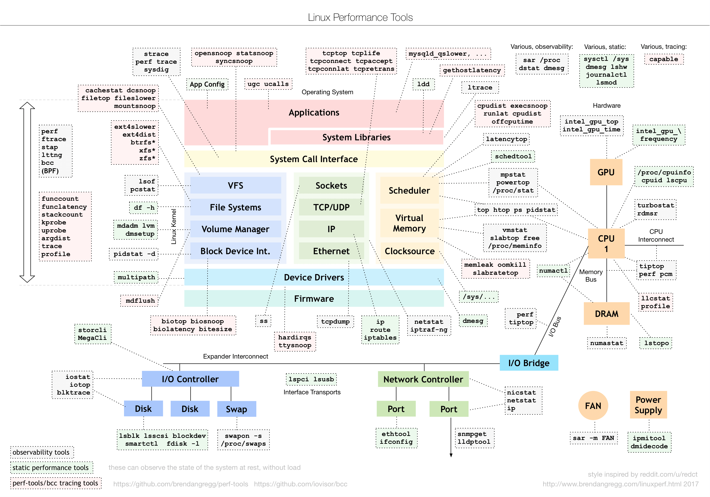
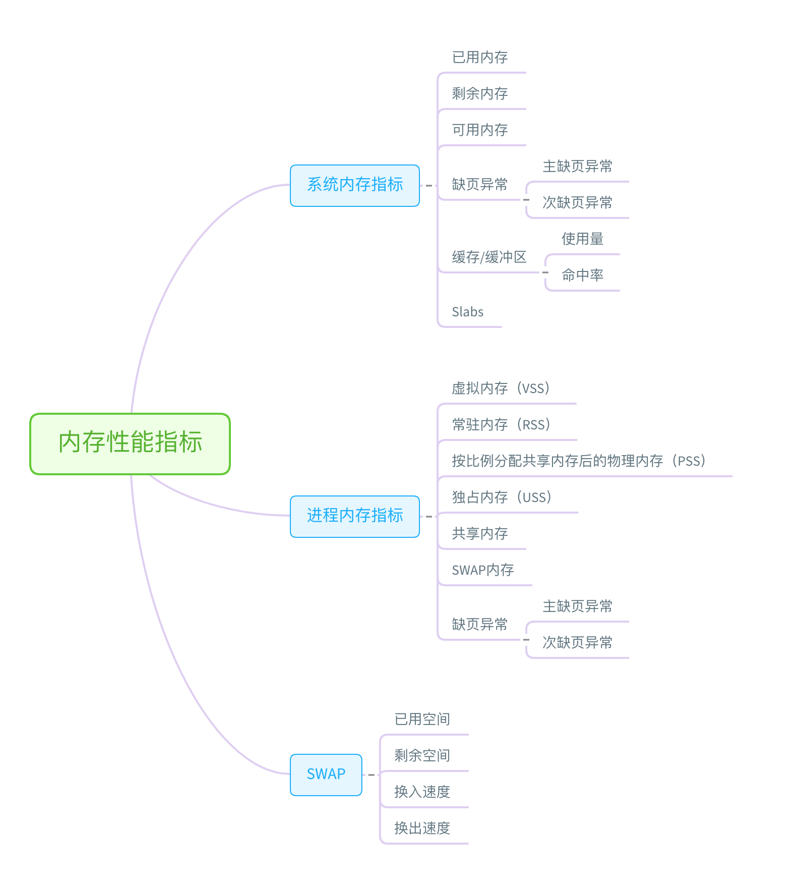
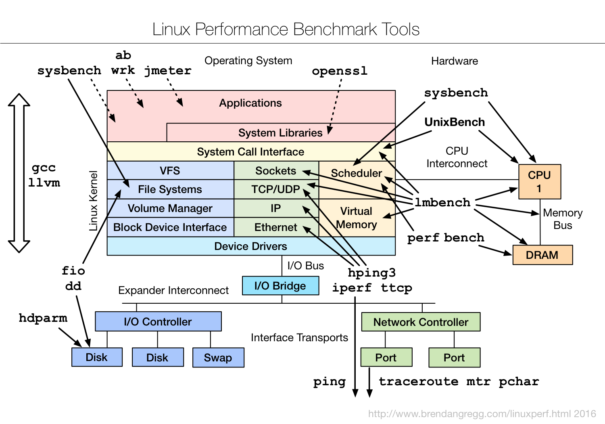

- 00 开篇词 别再让Linux性能问题成为你的绊脚石.md.html
- 01 如何学习Linux性能优化？.md.html
- 02 基础篇：到底应该怎么理解“平均负载”？.md.html
- 03 基础篇：经常说的 CPU 上下文切换是什么意思？（上）.md.html
- 04 基础篇：经常说的 CPU 上下文切换是什么意思？（下）.md.html
- 05 基础篇：某个应用的CPU使用率居然达到100%，我该怎么办？.md.html
- 06 案例篇：系统的 CPU 使用率很高，但为啥却找不到高 CPU 的应用？.md.html
- 07 案例篇：系统中出现大量不可中断进程和僵尸进程怎么办？（上）.md.html
- 08 案例篇：系统中出现大量不可中断进程和僵尸进程怎么办？（下）.md.html
- 09 基础篇：怎么理解Linux软中断？.md.html
- 10 案例篇：系统的软中断CPU使用率升高，我该怎么办？.md.html
- 11 套路篇：如何迅速分析出系统CPU的瓶颈在哪里？.md.html
- 12 套路篇：CPU 性能优化的几个思路.md.html
- 13 答疑（一）：无法模拟出 RES 中断的问题，怎么办？.md.html
- 14 答疑（二）：如何用perf工具分析Java程序？.md.html
- 15 基础篇：Linux内存是怎么工作的？.md.html
- 16 基础篇：怎么理解内存中的Buffer和Cache？.md.html
- 17 案例篇：如何利用系统缓存优化程序的运行效率？.md.html
- 18 案例篇：内存泄漏了，我该如何定位和处理？.md.html
- 19 案例篇：为什么系统的Swap变高了（上）.md.html
- 20 案例篇：为什么系统的Swap变高了？（下）.md.html
- 21 套路篇：如何“快准狠”找到系统内存的问题？.md.html
- 22 答疑（三）：文件系统与磁盘的区别是什么？.md.html
- 23 基础篇：Linux 文件系统是怎么工作的？.md.html
- 24 基础篇：Linux 磁盘I_O是怎么工作的（上）.md.html
- 25 基础篇：Linux 磁盘I_O是怎么工作的（下）.md.html
- 26 案例篇：如何找出狂打日志的“内鬼”？.md.html
- 27 案例篇：为什么我的磁盘I_O延迟很高？.md.html
- 28 案例篇：一个SQL查询要15秒，这是怎么回事？.md.html
- 29 案例篇：Redis响应严重延迟，如何解决？.md.html
- 30 套路篇：如何迅速分析出系统I_O的瓶颈在哪里？.md.html
- 31 套路篇：磁盘 I_O 性能优化的几个思路.md.html
- 32 答疑（四）：阻塞、非阻塞 I_O 与同步、异步 I_O 的区别和联系.md.html
- 33 关于 Linux 网络，你必须知道这些（上）.md.html
- 34 关于 Linux 网络，你必须知道这些（下）.md.html
- 35 基础篇：C10K 和 C1000K 回顾.md.html
- 36 套路篇：怎么评估系统的网络性能？.md.html
- 37 案例篇：DNS 解析时快时慢，我该怎么办？.md.html
- 38 案例篇：怎么使用 tcpdump 和 Wireshark 分析网络流量？.md.html
- 39 案例篇：怎么缓解 DDoS 攻击带来的性能下降问题？.md.html
- 40 案例篇：网络请求延迟变大了，我该怎么办？.md.html
- 41 案例篇：如何优化 NAT 性能？（上）.md.html
- 42 案例篇：如何优化 NAT 性能？（下）.md.html
- 43 套路篇：网络性能优化的几个思路（上）.md.html
- 44 套路篇：网络性能优化的几个思路（下）.md.html
- 45 答疑（五）：网络收发过程中，缓冲区位置在哪里？.md.html
- 46 案例篇：为什么应用容器化后，启动慢了很多？.md.html
- 47 案例篇：服务器总是时不时丢包，我该怎么办？（上）.md.html
- 48 案例篇：服务器总是时不时丢包，我该怎么办？（下）.md.html
- 49 案例篇：内核线程 CPU 利用率太高，我该怎么办？.md.html
- 50 案例篇：动态追踪怎么用？（上）.md.html
- 51 案例篇：动态追踪怎么用？（下）.md.html
- 52 案例篇：服务吞吐量下降很厉害，怎么分析？.md.html
- 53 套路篇：系统监控的综合思路.md.html
- 54 套路篇：应用监控的一般思路.md.html
- 55 套路篇：分析性能问题的一般步骤.md.html
- 56 套路篇：优化性能问题的一般方法.md.html
- 57 套路篇：Linux 性能工具速查.md.html
- 58 答疑（六）：容器冷启动如何性能分析？.md.html
- 加餐（一） 书单推荐：性能优化和Linux 系统原理.md.html
- 加餐（二） 书单推荐：网络原理和 Linux 内核实现.md.html
- 用户故事 “半路出家 ”，也要顺利拿下性能优化！.md.html
- 用户故事 运维和开发工程师们怎么说？.md.html
- 结束语 愿你攻克性能难关.md.html
- 捐赠
57 套路篇：Linux 性能工具速查
你好，我是倪朋飞。
上一节，我带你一起梳理了常见的性能优化思路，先简单回顾一下。
我们可以从系统和应用程序两个角度，来进行性能优化。
从系统的角度来说，主要是对 CPU、内存、网络、磁盘 I/O 以及内核软件资源等进行优化。
而从应用程序的角度来说，主要是简化代码、降低 CPU 使用、减少网络请求和磁盘 I/O，并借助缓存、异步处理、多进程和多线程等，提高应用程序的吞吐能力。
性能优化最好逐步完善，动态进行。不要追求一步到位，而要首先保证能满足当前的性能要求。性能优化通常意味着复杂度的提升，也意味着可维护性的降低。
如果你发现单机的性能调优带来过高复杂度，一定不要沉迷于单机的极限性能，而要从软件架构的角度，以水平扩展的方法来提升性能。
工欲善其事，必先利其器。我们知道，在性能分析和优化时，借助合适的性能工具，可以让整个过程事半功倍。你还记得有哪些常用的性能工具吗？今天，我就带你一起梳理一下常用的性能工具，以便你在需要时，可以迅速找到自己想要的。
性能工具速查
在梳理性能工具之前，首先给你提一个问题，那就是，在什么情况下，我们才需要去查找、挑选性能工具呢？你可以先自己想一下，再继续下面的内容。
其实在我看来，只有当你想了解某个性能指标，却不知道该怎么办的时候，才会想到，“要是有一个性能工具速查表就好了”这个问题。如果已知一个性能工具可用，我们更多会去查看这个工具的手册，找出它的功能、用法以及注意事项。
关于工具手册的查看，man 应该是我们最熟悉的方法，我在专栏中多次介绍过。实际上，除了 man 之外，还有另外一个查询命令手册的方法，也就是 info。
info 可以理解为 man 的详细版本，提供了诸如节点跳转等更强大的功能。相对来说，man 的输出比较简洁，而 info 的输出更详细。所以，我们通常使用 man 来查询工具的使用方法，只有在man 的输出不太好理解时，才会再去参考 info 文档。
当然，我说过了，要查询手册，前提一定是已知哪个工具可用。如果你还不知道要用哪个工具，就要根据想了解的指标，去查找有哪些工具可用。这其中：
有些工具不需要额外安装，就可以直接使用，比如内核的 /proc 文件系统；
而有些工具，则需要安装额外的软件包，比如 sar、pidstat、iostat 等。
所以，在选择性能工具时，除了要考虑性能指标这个目的外，还要结合待分析的环境来综合考虑。比如，实际环境是否允许安装软件包，是否需要新的内核版本等。
明白了工具选择的基本原则后，我们来看 Linux 的性能工具。首先还是要推荐下面这张图，也就是Brendan Gregg 整理的性能工具谱图。我在专栏中多次提到过，你肯定也已经参考过。- - （图片来自 brendangregg.com）
这张图从 Linux 内核的各个子系统出发，汇总了对各个子系统进行性能分析时，你可以选择的工具。不过，虽然这个图是性能分析最好的参考资料之一，它其实还不够具体。
比如，当你需要查看某个性能指标时，这张图里对应的子系统部分，可能有多个性能工具可供选择。但实际上，并非所有这些工具都适用，具体要用哪个，还需要你去查找每个工具的手册，对比分析做出选择。
那么，有没有更好的方法来理解这些工具呢？我的建议，还是从性能指标出发，根据性能指标的不同，将性能工具划分为不同类型。比如，最常见的就是可以根据 CPU、内存、磁盘 I/O 以及网络的各类性能指标，将这些工具进行分类。
接下来，我就从 CPU、内存、磁盘 I/O 以及网络等几个角度，梳理这些常见的 Linux 性能工具，特别是从性能指标的角度出发，理清楚到底有哪些工具，可以用来监测特定的性能指标。这些工具，实际上贯穿在我们专栏各模块的各个案例中。为了方便你查看，我将它们都整理成了表格，并增加了每个工具的使用场景。
CPU性能工具
首先，从 CPU 的角度来说，主要的性能指标就是 CPU 的使用率、上下文切换以及 CPU Cache 的命中率等。下面这张图就列出了常见的 CPU 性能指标。-
 -
从这些指标出发，再把 CPU 使用率，划分为系统和进程两个维度，我们就可以得到，下面这个 CPU 性能工具速查表。注意，因为每种性能指标都可能对应多种工具，我在每个指标的说明中，都帮你总结了这些工具的特点和注意事项。这些也是你需要特别关注的地方。-
-
从这些指标出发，再把 CPU 使用率，划分为系统和进程两个维度，我们就可以得到，下面这个 CPU 性能工具速查表。注意，因为每种性能指标都可能对应多种工具，我在每个指标的说明中，都帮你总结了这些工具的特点和注意事项。这些也是你需要特别关注的地方。-

内存性能工具
接着我们来看内存方面。从内存的角度来说，主要的性能指标，就是系统内存的分配和使用、进程内存的分配和使用以及 SWAP 的用量。下面这张图列出了常见的内存性能指标。-
-
从这些指标出发，我们就可以得到如下表所示的内存性能工具速查表。同 CPU 性能工具一样，这儿我也帮你梳理了，常见工具的特点和注意事项。-
 -
注：最后一行pcstat的源码链接为 https://github.com/tobert/pcstat
-
注：最后一行pcstat的源码链接为 https://github.com/tobert/pcstat
磁盘I/O性能工具
接下来，从文件系统和磁盘 I/O 的角度来说，主要性能指标，就是文件系统的使用、缓存和缓冲区的使用，以及磁盘 I/O 的使用率、吞吐量和延迟等。下面这张图列出了常见的 I/O 性能指标。-
 -
从这些指标出发，我们就可以得到，下面这个文件系统和磁盘 I/O 性能工具速查表。同 CPU和内存性能工具一样，我也梳理出了这些工具的特点和注意事项。-
-
从这些指标出发，我们就可以得到，下面这个文件系统和磁盘 I/O 性能工具速查表。同 CPU和内存性能工具一样，我也梳理出了这些工具的特点和注意事项。-

网络性能工具
最后，从网络的角度来说，主要性能指标就是吞吐量、响应时间、连接数、丢包数等。根据 TCP/IP 网络协议栈的原理，我们可以把这些性能指标，进一步细化为每层协议的具体指标。这里我同样用一张图，分别从链路层、网络层、传输层和应用层，列出了各层的主要指标。-
 -
从这些指标出发，我们就可以得到下面的网络性能工具速查表。同样的，我也帮你梳理了各种工具的特点和注意事项。-
-
从这些指标出发，我们就可以得到下面的网络性能工具速查表。同样的，我也帮你梳理了各种工具的特点和注意事项。-

基准测试工具
除了性能分析外，很多时候，我们还需要对系统性能进行基准测试。比如，
在文件系统和磁盘 I/O 模块中，我们使用 fio 工具，测试了磁盘 I/O 的性能。
在网络模块中，我们使用 iperf、pktgen 等，测试了网络的性能。
而在很多基于 Nginx 的案例中，我们则使用 ab、wrk 等，测试 Nginx 应用的性能。
除了专栏里介绍过的这些工具外，对于 Linux 的各个子系统来说，还有很多其他的基准测试工具可能会用到。下面这张图，是 Brendan Gregg 整理的 Linux 基准测试工具图谱，你可以保存下来，在需要时参考。- - （图片来自 brendangregg.com）
小结
今天，我们一起梳理了常见的性能工具，并从 CPU、内存、文件系统和磁盘 I/O、网络以及基准测试等不同的角度，汇总了各类性能指标所对应的性能工具速查表。
当分析性能问题时，大的来说，主要有这么两个步骤：
第一步，从性能瓶颈出发，根据系统和应用程序的运行原理，确认待分析的性能指标。
第二步，根据这些图表，选出最合适的性能工具，然后了解并使用工具，从而更快观测到需要的性能数据。
虽然 Linux 的性能指标和性能工具都比较多，但熟悉了各指标含义后，你自然就会发现这些工具同性能指标间的关联。顺着这个思路往下走，掌握这些工具的选用其实并不难。
当然，正如咱们专栏一直强调的，不要把性能工具当成性能分析和优化的全部。
一方面，性能分析和优化的核心，是对系统和应用程序运行原理的掌握，而性能工具只是辅助你更快完成这个过程的帮手。
另一方面，完善的监控系统，可以提供绝大部分性能分析所需的基准数据。从这些数据中，你很可能就能大致定位出性能瓶颈，也就不用再去手动执行各类工具了。
思考
最后，我想邀请你一起来聊聊，你都使用过哪些性能工具。你通常是怎么选择性能工具的？又是如何想到要用这些性能工具，来排查和分析性能问题的？你可以结合我的讲述，总结自己的思路。
欢迎在留言区和我讨论，也欢迎你把这篇文章分享给你的同事、朋友。我们一起在实战中演练，在交流中进步。
© 2019 - 2023 Liangliang Lee. Powered by gin and hexo-theme-book.